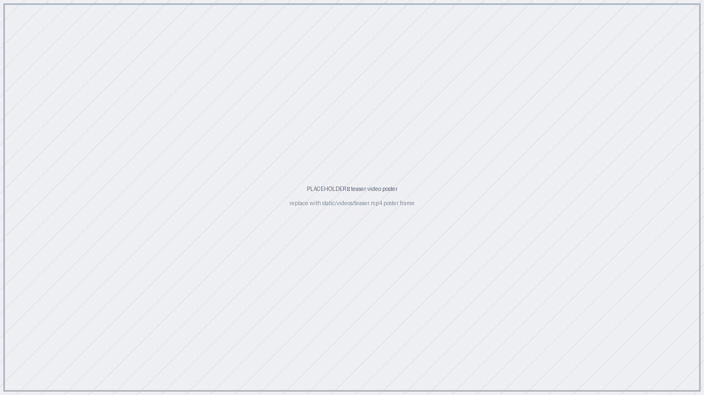
Placeholder — drop the overview video here
(YouTube embed, or static/videos/teaser.mp4).
Synthetic 3D scene generation is increasingly used as a data source for computer vision and embodied AI, but existing generators often optimize perceptual realism without reliably satisfying task-critical functional constraints. This mismatch limits the usefulness of synthetic data for downstream training, where accessibility, traversability, and spatial rule compliance are often essential.
We present iARCS, an iterative agentic reinforcement learning framework that adapts a pretrained scene generator to natural-language task requirements. iARCS uses a two-stage strategy: universal-reward pretraining to improve physical plausibility and layout quality, followed by task-specific fine-tuning with LLM-generated reward programs that are iteratively refined from training feedback.
Experiments show improved constraint fidelity on walkability, reachability, and clearance-focused tasks, effective task-specific constraint optimization, and competitive scene diversity. We further show that data generated by iARCS improves a base generator, supporting its value as a practical synthetic data generation tool rather than only a controllable scene editing method.
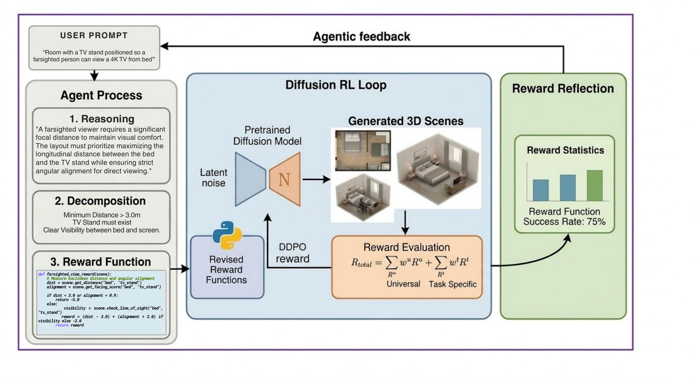
Overview. A pretrained diffusion scene generator is adapted by RL. Stage 1 optimizes universal rewards (collision avoidance, boundary adherence, object density, accessibility). Stage 2 fine-tunes with task-specific rewards synthesized by an LLM from a natural-language prompt and refined across iterations.
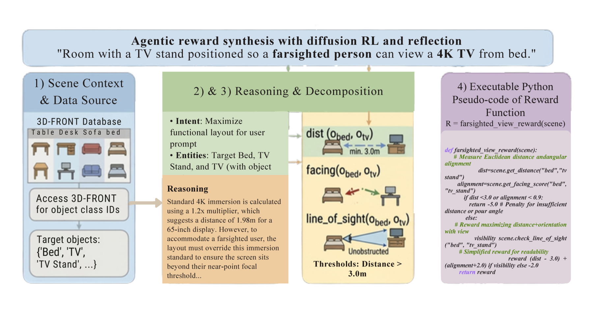
A natural-language requirement is decomposed into measurable geometric checks and compiled into executable reward code used inside the RL loop.
| Method | Colobj ↓ | Colscene ↓ | Rout ↓ | Rreach (%) ↑ | Rwalkable ↑ | FID ↓ | SCA |
|---|---|---|---|---|---|---|---|
| Ground Truth | 42.00% | 72.04% | 5.79% | 82.80% | 0.841 | – | – |
| ATISS | 54.12% | 85.96% | 7.32% | 83.57% | 0.780 | 1.39 | 67.23% |
| MiDiffusion | 52.67% | 81.67% | 5.89% | 85.7% | 0.806 | 1.34 | 65.99% |
| iARCS (Ours) | 40.45% | 64.63% | 3.04% | 87.82% | 0.861 | 1.60 | 68.51% |
Bedroom scenes from 3D-FRONT. Best in bold.
| Method | Colobj ↓ | Colscene ↓ | Rout ↓ | Rreach (%) ↑ | Rwalkable ↑ | FID ↓ | SCA |
|---|---|---|---|---|---|---|---|
| MiDiffusion (3D-FRONT) | 52.67% | 81.67% | 5.89% | 85.7% | 0.806 | 1.34 | 66.00% |
| MiDiffusion (3D-FRONT + iARCS aug.) | 41.49% | 63.61% | 3.12% | 92.52% | 0.8272 | 1.34 | 66.10% |
| Method | Colobj ↓ | Colscene ↓ | Rout ↓ | Rreach (%) ↑ | Rwalkable ↑ | FID ↓ | SCA |
|---|---|---|---|---|---|---|---|
| Single-stage | 62.17% | 95.83% | 16.07% | 64.66% | 0.679 | 1.96 | 78.69% |
| Two-stage (ours) | 38.79% | 70.04% | 5.84% | 80.37% | 0.744 | 1.75 | 72.38% |
Task: "Scene with TV and bed at a 3 m distance."
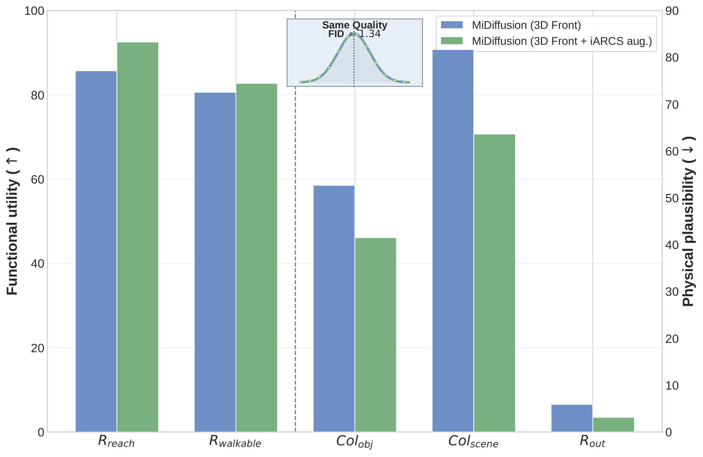
Improvement of the base generator when augmented with iARCS data.
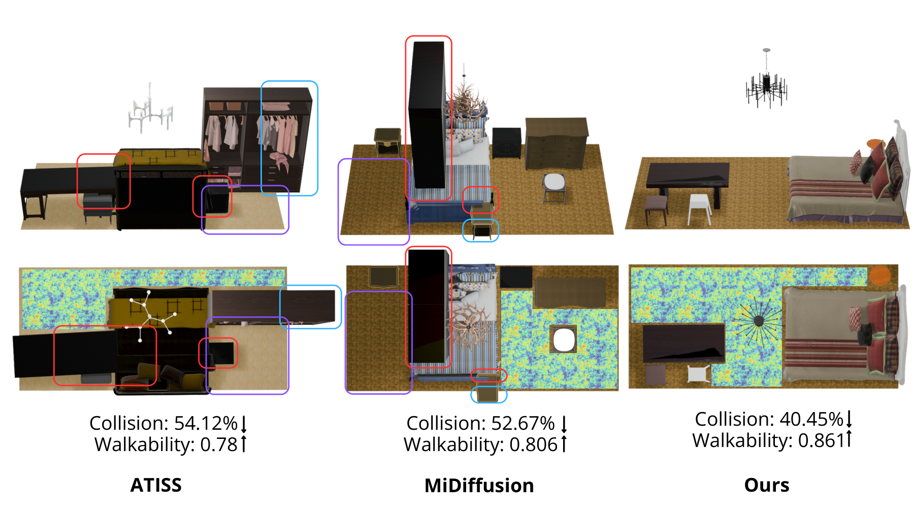
Red, blue and purple boxes mark object collisions, out-of-bound objects and unreachable regions respectively.
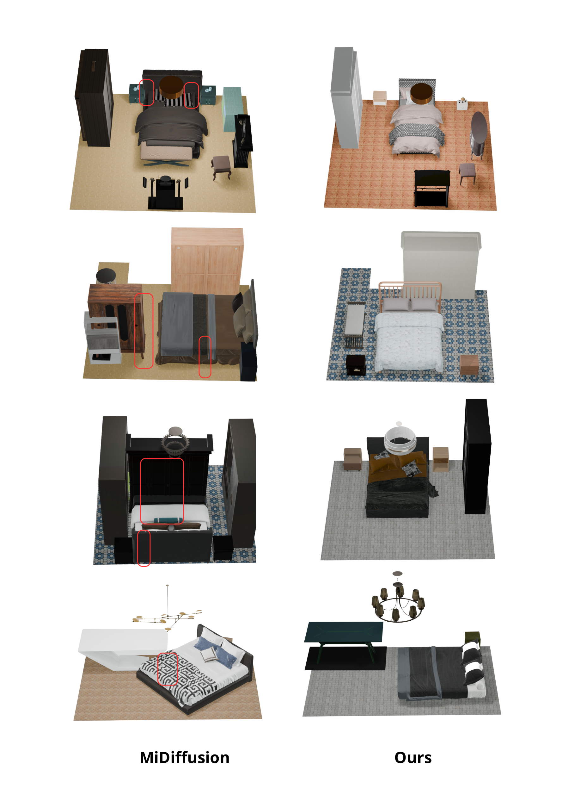
Placeholder gallery — swap these for top-down renders of released scenes.
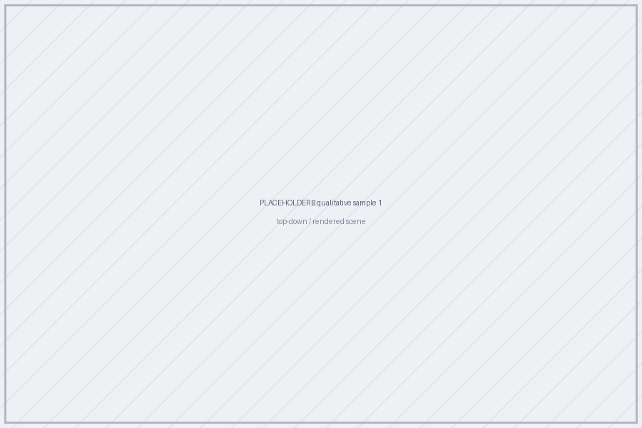
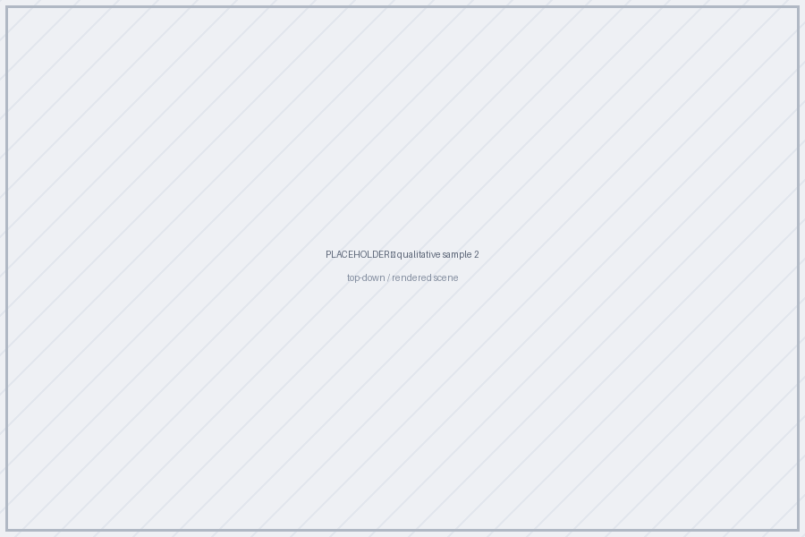
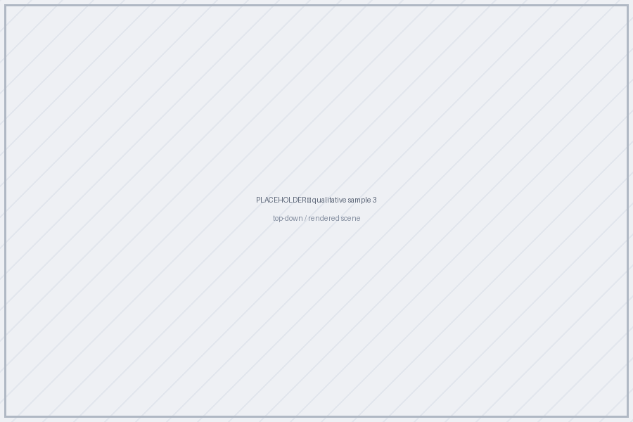
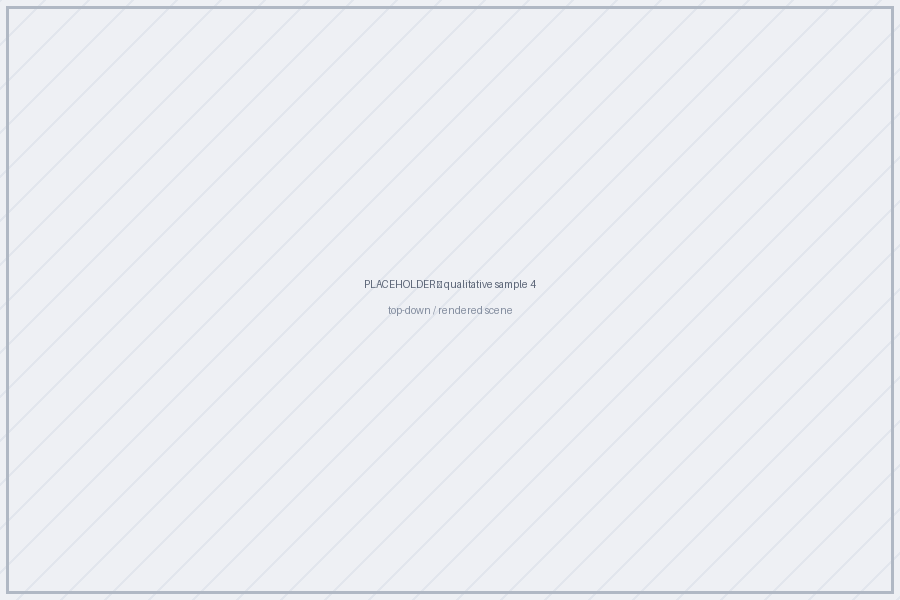
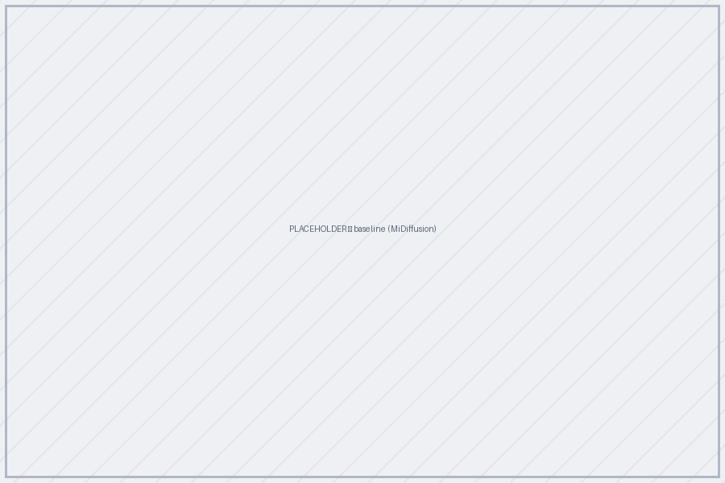
MiDiffusion (baseline)
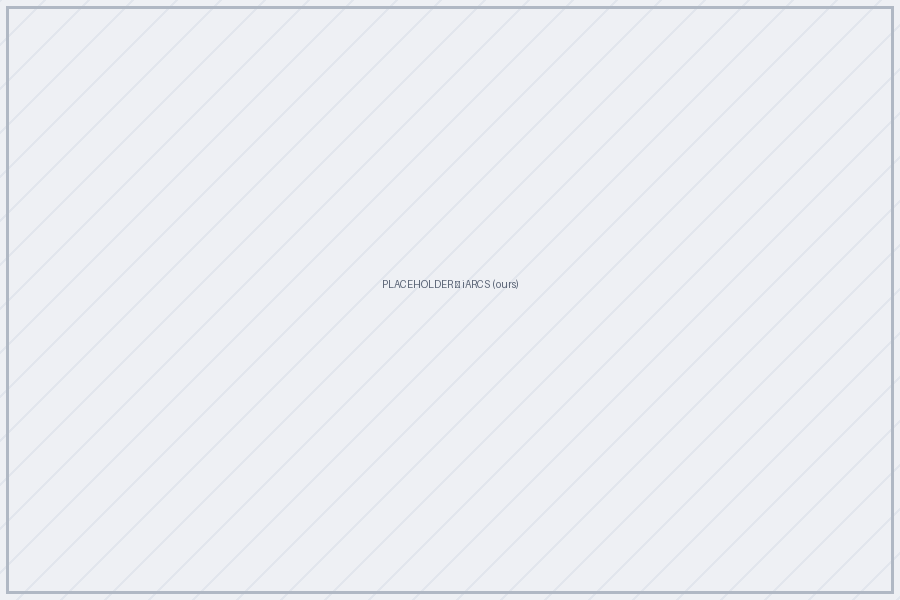
iARCS (ours)
Placeholder pair — replace with matched scenes rendered from the same floor plan.
@article{adhikari2026iarcs,
title = {iARCS: Iterative Agentic RL for Controllable 3D Scene Generation},
author = {Adhikari, Saugat and Neupane, Ashok Prasad and Paudel, Pramish
and Chhatkuli, Ajad and Paudel, Danda Pani},
journal = {arXiv preprint arXiv:2608.06161},
year = {2026}
}